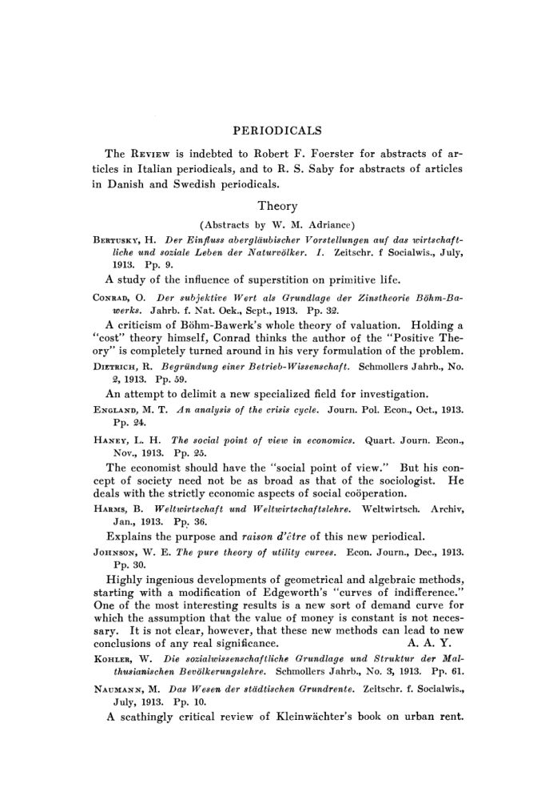

Março de 1914: o Federal Reserve, o imposto de renda e os juros
Leitura: 12 min
Willis conta como nasceu o Federal Reserve, Blakey explica o novo imposto de renda, Haney mede o juro do crédito rural no Texas, Fetter discute a origem dos juros e Kohler, a imigração.


Em 23 de dezembro de 1913, o presidente Woodrow Wilson assinou a Federal Reserve Act. Três meses depois, Henry Parker Willis abre o número de março de 1914 da American Economic Review com a história da lei, que considera a mais abrangente legislação bancária americana desde a lei dos bancos nacionais de 1863–1864. Logo em seguida, Roy G. Blakey, de Cornell, explica o imposto de renda criado em outubro de 1913.
São cinco artigos nas primeiras 108 páginas, e três deles tratam de crédito e juros. Além de Willis e Blakey, Lewis H. Haney, da University of Texas, descreve como o agricultor de um estado algodoeiro consegue crédito e quanto paga por ele. Frank A. Fetter, de Princeton, defende a teoria psicológica dos juros contra Irving Fisher, Henry R. Seager e Harry G. Brown. Max J. Kohler examina a política imigratória americana à luz da história e dos números do censo. Seguem resenhas organizadas por área, listas de livros novos, documentos oficiais, resumos de periódicos e notas.
O que a Federal Reserve Act mudou no sistema bancário?
Henry Parker Willis · “The Federal Reserve Act” · pp. 1–24
Willis começa pela tramitação. O projeto foi preparado sob a direção de Carter Glass, da Comissão de Bancos e Moeda da Câmara, e apresentado em 18 de junho de 1913, já com a aprovação do presidente. A Câmara o aprovou em 18 de setembro. No Senado, houve audiências até 25 de outubro, relatório em 1º de dezembro e votação final em 19 de dezembro; a comissão de conferência concluiu o texto em 22 de dezembro.
O plano previa bancos de reserva regionais, de propriedade dos bancos membros, que funcionariam como bancos dos bancos, sob a supervisão de um órgão federal, o Federal Reserve Board. O capital de cada banco de reserva seria de 10% do capital dos bancos associados, algo em torno de US$ 100 milhões no total. As novas notas seriam obrigações dos Estados Unidos, emitidas contra papel comercial e com reserva de ouro.
Willis compara a lei ao projeto Aldrich, da National Monetary Commission. Na teoria e no plano geral, diz, não há parentesco: o projeto Aldrich criava uma única associação central controlada pelos bancos; a nova lei cria 12 bancos, controle local e supervisão estrita do governo. Na técnica bancária, a semelhança é grande, e foi deliberada: a Câmara conservou a redação do projeto Aldrich onde pôde, para reduzir o espaço das acusações de imprudência.
Para Willis, a lei tem três traços centrais: um mercado geral de desconto para o papel comercial, a reunião das reservas dos bancos e uma moeda elástica. Até então, argumenta, o crédito americano servia sobretudo à especulação: as saídas de ouro obedeciam à taxa dos empréstimos à vista na bolsa, e não à do desconto comercial. Ele cita bancos do interior segundo os quais metade de seus ganhos vinha das tarifas de cobrança de cheques, que a lei passa a limitar.
Como funciona o novo imposto de renda?
Roy G. Blakey (Cornell University) · “The New Income Tax” · pp. 25–46
Blakey trata do imposto criado pela seção II da lei tarifária de 3 de outubro de 1913. Ele o situa num movimento de mais de três décadas, que passou pela lei de 1894, anulada pela Suprema Corte, e terminou com a ratificação da emenda constitucional que permitiu tributar a renda sem repartição entre os estados.
O imposto tem três partes. Há um imposto “normal” de 1% sobre a renda líquida das empresas, sem dedução. Há outro de 1% sobre a renda individual acima de US$ 3.000, ou US$ 4.000 para casais. E há um imposto adicional, progressivo, sobre a renda individual acima de US$ 20.000, com alíquotas de 1% a 6% aplicadas apenas à parcela de cada faixa. O imposto normal é retido na fonte sempre que possível, à maneira inglesa; o adicional depende da declaração do contribuinte.
A crítica mais frequente, diz Blakey, é ao limite de isenção. Ele é alto em comparação internacional: na Inglaterra a isenção máxima é de 160 libras e só para rendas de até 400 libras; na Prússia, 900 marcos. Blakey o justifica pelo padrão de vida mais alto, pela perda de poder de compra desde 1894 e, sobretudo, pela administração: uma máquina de lançamento ainda inexperiente não deve começar pelas rendas que custam mais e rendem menos.
Entre os problemas, aponta a omissão sobre o valor locativo da casa própria, que favorece o proprietário diante do inquilino, e a dupla tributação dos dividendos das holdings. A exigência de certificados de propriedade nos cupons de títulos ao portador causou incômodo, mas, sem ela, quem recebesse US$ 100.000 de juros poderia dividir os cupons entre quarenta amigos e escapar do imposto. A conclusão é que os princípios são sólidos e que o êxito dependerá da administração.
Quanto custava o crédito para o agricultor do Texas?
Lewis H. Haney (University of Texas) · “Farm Credit Conditions in a Cotton State” · pp. 47–67
Haney estuda o crédito rural no Texas, estado algodoeiro onde 53% dos agricultores são arrendatários. A base são relatos de agricultores, banqueiros e comerciantes, quase todos do centro e do leste do estado: mais de cem empréstimos informados por agricultores de 35 condados, cartas de vinte banqueiros e de meia dúzia de comerciantes, com data aproximada de 1912. O autor avisa que os dados favorecem os agricultores mais prósperos.
Quase todos os proprietários tomam empréstimos bancários, e a maioria o faz todo ano, sobretudo para “fazer a safra”: mão de obra, ração, sementes, mantimentos e mulas. O empréstimo médio fica pouco acima de US$ 500, ou cerca de US$ 300 sem os casos excepcionais; o mais comum é de US$ 50. A garantia usual é a hipoteca de bens móveis, com as mulas em destaque.
Haney mostra como o teto legal é contornado: juros descontados antecipadamente, prazos curtos renovados com novo desconto, taxas fixas sobre pequenos valores. O arrendatário depende do comerciante local, que adianta mercadorias contra hipoteca da colheita, cobra caro e muitas vezes exige que o algodão lhe seja vendido. O banco não atende esse cliente porque não gosta de prazos longos nem de valores pequenos e não aceita a colheita como garantia. Na prática, de 5% a 20% dos empréstimos de muitos bancos texanos vão a comerciantes que repassam o crédito aos lavradores.
Entre os remédios, o autor examina o plano dos banqueiros texanos para reter algodão em armazém, com adiantamento de US$ 35 por fardo, e a cooperação de crédito pessoal. Critica a lei texana recém-aprovada, inspirada na de Massachusetts, que limita os empréstimos a US$ 200 e a oito meses. Propõe responsabilidade ampliada dos sócios, cotas menores, prazos de nove meses e um banco central das cooperativas.
De onde vêm os juros?
Frank A. Fetter (Princeton University) · “Interest Theories, Old and New” · pp. 68–92
Fetter intervém num debate travado nas páginas da própria revista. Seager atacara a “teoria da impaciência” de Irving Fisher, e Fisher respondera; Harry G. Brown, colega de Fisher em Yale, publicara uma defesa da produtividade no Quarterly Journal of Economics. Fetter divide o campo em duas teorias: a tecnológica, que explica os juros pelo rendimento físico dos meios de produção, e a psicológica, que os explica pela preferência no tempo.
A surpresa, para Fetter, é a resposta de Fisher. Depois de escrever em 1907 que a produtividade física não explica os juros, Fisher diz agora que ela é um dos traços cardeais de sua teoria. Fetter cita os dois textos lado a lado e conclui que Fisher cedeu no ponto principal. Também rejeita a troca, feita por Fisher em 1911, de “preferência no tempo” por “impatience”: a palavra sugere inquietação, quando a taxa de juros resulta de todos os graus de preferência, inclusive pela paciência e pela abstinência de quem guarda para o futuro.
Fetter expõe então a “teoria da capitalização”, que diz ter desenvolvido desde 1900. A preferência no tempo vem primeiro; dela resulta o preço dos bens duráveis, que é o valor descontado de seus usos futuros; só depois surge a taxa de juros dos empréstimos em dinheiro. A ordem lógica é a inversa da usual, em que se parte de uma taxa de juros para avaliar o capital.
Para Fetter, a taxa de juros contratual é “o reflexo, num preço de mercado dos empréstimos em dinheiro, de uma taxa de capitalização”. (“the reflection, in a market price on money loans, of a rate of capitalization”)
Contra Seager e Brown, Fetter argumenta que a produtividade invocada pelos teóricos da produtividade não é física, mas de valor, e que esse excedente de valor já pressupõe o desconto do futuro no preço dos fatores. O empresário que toma emprestado é um intermediário: transmite ao mercado de crédito a preferência no tempo dos consumidores. Por isso, conclui, só a teoria da capitalização explica com os mesmos termos os empréstimos de consumo e os de produção.
O que a história ensina sobre a imigração?
Max J. Kohler · “Some Aspects of the Immigration Problem” · pp. 93–108
Kohler distingue regular a imigração de restringi-la e defende a primeira. Seu argumento é histórico: as dificuldades atribuídas à imigração recente já existiam antes, e as agências que hoje ajudam o imigrante a se integrar são mais numerosas do que eram. Ele critica a Immigration Commission federal por ter adotado a restrição como conclusão sem estudar as condições históricas nem as instituições de integração.
Os números do censo, diz Kohler, não mostram aumento extraordinário da população estrangeira. O maior crescimento decenal dos nascidos no exterior foi o de 1850–1860, de 84,4%; o de 1900–1910 foi de cerca de 30,7%, abaixo dos 38,5% de 1880–1890.
Kohler reconstitui a política federal. Os registros regulares começam em 1820, sob a lei de 1819, que também melhorou as condições a bordo e condenou o sistema de servidão por contrato, pelo qual muitos imigrantes do século XVIII pagavam a passagem com anos de trabalho. De 1821 a 1881 chegaram mais de 10 milhões de imigrantes, e de 1881 a 1910 mais 17 milhões. Até a lei de 1882, segundo um relatório do Senado que ele cita, o sentimento predominante era de incentivo à imigração. Kohler cita ainda a estimativa do Census Bureau de que, em 1900, a imigração havia acrescentado 30 milhões de pessoas à população e US$ 40 bilhões à riqueza do país.
O autor critica também o teste de alfabetização então proposto. No ano fiscal de 1913, entre 1.197.892 imigrantes havia 333.285 agricultores e trabalhadores rurais, justamente os mais atingidos por esse teste. Mais de 80% dos imigrantes de 1912 declararam ir ao encontro de parentes, e quase 14%, de amigos. Para Kohler, a solução está em ampliar as agências públicas e privadas que distribuem os imigrantes pelo país e os ajudam a se integrar.
O que mais há na edição?
As resenhas, organizadas por área, abrem com a revisão do manual de Seager, resenhada por Carroll W. Doten, e incluem a terceira edição da Positive Theorie des Kapitales de Böhm-Bawerk, por Alvin S. Johnson, a interpretação econômica da Constituição de Charles A. Beard, por C. H. Levermore, e o livro de Albert Aftalion sobre as crises periódicas de superprodução, por Wesley C. Mitchell. H. B. Gardner resenha quatro livros sobre a nova lei do imposto de renda. Nos documentos, Irving Fisher apresenta a equação de trocas de 1913 com uma previsão para 1914, e E. W. Kemmerer escreve sobre o crédito rural.
Na minha leitura
Na minha leitura, a edição mostra a teoria monetária e a fiscal saindo do debate e entrando na lei. Willis descreve um banco central desenhado para dar elasticidade ao crédito comercial; Blakey, um imposto cuja eficácia depende menos da alíquota que da retenção na fonte e da máquina administrativa. Nos dois casos, o desenho institucional decide o resultado tanto quanto o princípio.
Haney e Fetter tratam do mesmo preço, os juros, em planos opostos. Haney mede o juro efetivo pago por quem tem pouca garantia e mostra que ele depende do prazo, do desconto antecipado e da falta de concorrência; Fetter pergunta por que existe juro. A distância entre o juro teórico e o juro do armazém no Texas é um lembrete de que o mercado de crédito real é segmentado.
Glossário
- Federal Reserve Board
- órgão federal criado em 1913 para supervisionar os bancos de reserva regionais.
- Redesconto
- compra, por um banco de reserva, de títulos já descontados por um banco membro.
- Retenção na fonte
- desconto do imposto por quem paga a renda, antes de entregá-la ao contribuinte.
- Isenção (abatement)
- parcela da renda individual não tributada: US$ 3.000 em 1913, ou US$ 4.000 para casais.
- Hipoteca de bens móveis
- garantia de empréstimo constituída sobre animais, ferramentas ou colheitas.
- Preferência no tempo
- valor maior atribuído aos bens presentes em relação aos futuros.
- Teoria da capitalização
- tese de Fetter de que o preço do capital, obtido pelo desconto de rendas futuras, precede a taxa de juros.
Artigos (5)
- The Federal Reserve Act — Henry Parker Willis (pp. 1–24) · resenha acima · comentário completo · JSTOR
- The New Income Tax — Roy G. Blakey (Cornell University) (pp. 25–46) · resenha acima · comentário completo · JSTOR
- Farm Credit Conditions in a Cotton State — Lewis H. Haney (University of Texas) (pp. 47–67) · resenha acima · JSTOR
- Interest Theories, Old and New — Frank A. Fetter (Princeton University) (pp. 68–92) · resenha acima · JSTOR
- Some Aspects of the Immigration Problem — Max J. Kohler (pp. 93–108) · resenha acima · JSTOR
Resenhas (28)
- Henry Rogers Seager, Principles of Economics — Carroll W. Doten (pp. 109–110). Revisão ampliada do manual Introduction to Economics. JSTOR
- Leon Carroll Marshall, Chester Whitney Wright e James Alfred Field (orgs.), Materials for the Study of Elementary Economics — Herbert E. Mills (pp. 111–112). Coletânea de textos para o ensino introdutório de economia. JSTOR
- Eugen von Böhm-Bawerk, Kapital und Kapitalzins, Zweite Abteilung: Positive Theorie des Kapitales (3ª ed.) — Alvin S. Johnson (pp. 113–116). Terceira edição da teoria positiva do capital. JSTOR
- Charles A. Beard, An Economic Interpretation of the Constitution of the United States — C. H. Levermore (pp. 117–119). Interpretação econômica da elaboração da Constituição americana. JSTOR
- Henry W. Farnam, The Economic Utilization of History — Roswell C. McCrea (pp. 119–120). Ensaios sobre o uso da história na economia. JSTOR
- Frederick Adams Woods, The Influence of Monarchs — Ulysses G. Weatherly (pp. 120–122). Estudo sobre a influência dos monarcas na história. JSTOR
- J. Russell Smith, Industrial and Commercial Geography — Lincoln Hutchinson (pp. 122–125). Manual de geografia industrial e comercial. JSTOR
- Jan St. Lewinski, The Origin of Property, and the Formation of the Village Community — Ulysses G. Weatherly (pp. 125–126). Ensaio sobre a formação dos sistemas de propriedade. JSTOR
- Charles W. Dahlinger, The New Agrarianism — A. P. Winston (pp. 129–130). Livro sobre a questão agrária americana. JSTOR
- E. R. Dewsnup, J. F. Morton, J. T. Strombeck e William T. Trimpe, Freight Classification e outros folhetos — Henry Thurtell (pp. 134–135). Folhetos de estudo sobre classificação, roteamento e reclamações de fretes. JSTOR
- J. W. Sullivan, Markets for the People. The Consumer's Part — Edward M. Hartwell (pp. 137–139). Livro sobre mercados públicos e o papel do consumidor. JSTOR
- James Davenport Whelpley, The Trade of the World — Frank R. Rutter (pp. 139–141). Panorama comercial de treze países ou regiões. JSTOR
- H. B. Heylin, Buyers and Sellers in the Cotton Trade — Melvin T. Copeland (pp. 141–143). Estudo da organização do mercado de algodão. JSTOR
- Albert Aftalion, Les Crises Périodiques de Surproduction — Wesley C. Mitchell (pp. 143–146). Dois volumes sobre as variações periódicas de preços e da produção. JSTOR
- James Edward Hagerty, Mercantile Credit — Paul T. Cherington (pp. 148–149). Manual de crédito mercantil. JSTOR
- Norris A. Brisco, Economics of Business, e Lee Galloway, Organization and Management — William A. Rawles (pp. 150–152). Dois manuais de economia e administração de empresas. JSTOR
- Alfred D. Chandler, Express Trusts under the Common Law — Francis Lynde Stetson (pp. 155–158). Estudo jurídico dos trusts expressos. JSTOR
- Paul Lenz, Die Konzentration im Seeschiffahrtsgewerbe — E. J. Clapp (pp. 158–159). Tese sobre a concentração na navegação marítima. JSTOR
- Theodore W. Glocker, Solomon Blum e Frederick Shipp Deibler, três estudos sobre sindicatos americanos — William Kirk (pp. 161–164). Estudos sobre o governo, as disputas de jurisdição e um sindicato de madeireiros. JSTOR
- Louise Montgomery, Lillian R. Matthews e Mary van Kleeck, três estudos sobre o trabalho feminino — Edith Abbott (pp. 164–166). Estudos sobre trabalhadoras em Chicago, San Francisco e Nova York. JSTOR
- Guillermo Subercaseaux, El Papel Moneda — David Kinley (pp. 169–170). Estudo sobre o papel-moeda, a partir da experiência chilena. JSTOR
- George F. Tucker, Thomas Gold Frost, Henry Campbell Black e Henry Crofut White, quatro livros sobre a lei do imposto de renda de 1913 — H. B. G. (pp. 174–175). Quatro guias da nova lei do imposto de renda. JSTOR
- James Albert Woodburn, The Life of Thaddeus Stevens — H. B. Gardner (pp. 175–176). Biografia, com as ideias de Stevens sobre as notas de curso legal e a dívida da Guerra Civil. JSTOR
- Richard Jebb, The Britannic Question — H. R. Mussey (pp. 176–179). Ensaio sobre a união dos domínios autônomos do Império Britânico. JSTOR
- W. F. Gephart, Insurance and the State — Albert W. Whitney (pp. 188–189). Livro sobre se o Estado deve assumir o negócio de seguros. JSTOR
- Vladimir G. Simkhovitch, Marxism versus Socialism — O. D. Skelton (pp. 191–193). Crítica das teses de Marx à luz do socialismo contemporâneo. JSTOR
- J. A. R. Marriott (org.), The French Revolution of 1848 in its Economic Aspect — O. D. Skelton (pp. 193–194). Reedição de textos de Louis Blanc e Émile Thomas. JSTOR
- Georg von Mayr, Statistik und Gesellschaftslehre, vol. III, Moralstatistik, nº IV — Louis N. Robinson (pp. 196–198). Fascículo sobre estatística criminal. JSTOR
Novos livros (17)
- New Books (teoria e sua história) — redação (pp. 116–117). Lista de lançamentos sobre obras gerais, teoria e sua história, alguns com nota curta. JSTOR
- New Books (história econômica e geografia) — redação (pp. 126–128). Lista de lançamentos sobre história econômica e geografia, alguns com nota curta. JSTOR
- New Books (agricultura, mineração, florestas e pesca) — redação (pp. 130–133). Lista de lançamentos sobre agricultura, mineração, florestas e pesca, alguns com nota curta. JSTOR
- New Books (indústrias de transformação) — redação (pp. 133). Lista de lançamentos sobre indústrias de transformação. JSTOR
- New Books (transportes e comunicações) — redação (pp. 135–137). Lista de lançamentos sobre transportes e comunicações, alguns com nota curta. JSTOR
- New Books (comércio e crises comerciais) — redação (pp. 146–147). Lista de lançamentos sobre comércio e crises comerciais, alguns com nota curta. JSTOR
- New Books (contabilidade, negócios, investimentos e bolsas) — redação (pp. 152–155). Lista de lançamentos sobre contabilidade, métodos de negócios, investimentos e bolsas, alguns com nota curta. JSTOR
- New Books (capital e organização capitalista) — redação (pp. 159–161). Lista de lançamentos sobre capital e organização capitalista, alguns com nota curta. JSTOR
- New Books (trabalho e organizações trabalhistas) — redação (pp. 166–169). Lista de lançamentos sobre trabalho e organizações trabalhistas, alguns com nota curta. JSTOR
- New Books (moeda, preços, crédito e bancos) — redação (pp. 170–174). Lista de lançamentos sobre moeda, preços, crédito e bancos, alguns com nota curta. JSTOR
- New Books (finanças públicas, tributação e tarifa) — redação (pp. 179–183). Lista de lançamentos sobre finanças públicas, tributação e tarifa, alguns com nota curta. JSTOR
- New Books (população e migração) — redação (pp. 183–184). Lista de lançamentos sobre população e migração. JSTOR
- New Books (problemas sociais e reformas) — redação (pp. 184–188). Lista de lançamentos sobre problemas sociais e reformas, alguns com nota curta. JSTOR
- New Books (seguros e pensões) — redação (pp. 190). Lista de lançamentos sobre seguros e pensões. JSTOR
- New Books (pauperismo e assistência) — redação (pp. 190–191). Lista de lançamentos sobre pauperismo e assistência. JSTOR
- New Books (socialismo e cooperativas) — redação (pp. 195–196). Lista de lançamentos sobre socialismo e cooperativas, alguns com nota curta. JSTOR
- New Books (estatística e seus métodos) — redação (pp. 198–199). Lista de lançamentos sobre estatística e seus métodos. JSTOR
Documentos, periódicos e notas (3)
- Documents, Reports, and Legislation — redação e colaboradores (pp. 200–227). Resumos de documentos oficiais, com textos de G. P. Watkins, Spurgeon Bell, R. F. Foerster, G. P. Wyckoff, Irving Fisher, E. W. Kemmerer e W. F. Gephart. JSTOR
- Periodicals — redação e colaboradores (pp. 228–272). Resumos de artigos de periódicos americanos e estrangeiros, por área. JSTOR
- Notes — redação (pp. 273–280). Registro de congressos, conferências, publicações e nomeações. JSTOR
Fontes
- The Federal Reserve Act (pp. 1–24). JSTOR · Internet Archive (PDF)
- The New Income Tax (pp. 25–46). JSTOR · Internet Archive (PDF)
- Farm Credit Conditions in a Cotton State (pp. 47–67). JSTOR · Internet Archive (PDF)
- Interest Theories, Old and New (pp. 68–92). JSTOR · Internet Archive (PDF)
- Some Aspects of the Immigration Problem (pp. 93–108). JSTOR · Internet Archive (PDF)
- [untitled] The American Economic Review, (1914-03-01), pages 109-110 (pp. 109–110). JSTOR · Internet Archive (PDF)
- [untitled] The American Economic Review, (1914-03-01), pages 111-112 (pp. 111–112). JSTOR · Internet Archive (PDF)
- [untitled] The American Economic Review, (1914-03-01), pages 113-116 (pp. 113–116). JSTOR · Internet Archive (PDF)
- New Books (pp. 116–117). JSTOR · Internet Archive (PDF)
- [untitled] The American Economic Review, (1914-03-01), pages 117-119 (pp. 117–119). JSTOR · Internet Archive (PDF)
- [untitled] The American Economic Review, (1914-03-01), pages 119-120 (pp. 119–120). JSTOR · Internet Archive (PDF)
- [untitled] The American Economic Review, (1914-03-01), pages 120-122 (pp. 120–122). JSTOR · Internet Archive (PDF)
- [untitled] The American Economic Review, (1914-03-01), pages 122-125 (pp. 122–125). JSTOR · Internet Archive (PDF)
- [untitled] The American Economic Review, (1914-03-01), pages 125-126 (pp. 125–126). JSTOR · Internet Archive (PDF)
- New Books (pp. 126–128). JSTOR · Internet Archive (PDF)
- [untitled] The American Economic Review, (1914-03-01), pages 129-130 (pp. 129–130). JSTOR · Internet Archive (PDF)
- New Books (pp. 130–133). JSTOR · Internet Archive (PDF)
- New Books (pp. 133). JSTOR · Internet Archive (PDF)
- [untitled] The American Economic Review, (1914-03-01), pages 134-135 (pp. 134–135). JSTOR · Internet Archive (PDF)
- New Books (pp. 135–137). JSTOR · Internet Archive (PDF)
- [untitled] The American Economic Review, (1914-03-01), pages 137-139 (pp. 137–139). JSTOR · Internet Archive (PDF)
- [untitled] The American Economic Review, (1914-03-01), pages 139-141 (pp. 139–141). JSTOR · Internet Archive (PDF)
- [untitled] The American Economic Review, (1914-03-01), pages 141-143 (pp. 141–143). JSTOR · Internet Archive (PDF)
- [untitled] The American Economic Review, (1914-03-01), pages 143-146 (pp. 143–146). JSTOR · Internet Archive (PDF)
- New Books (pp. 146–147). JSTOR · Internet Archive (PDF)
- [untitled] The American Economic Review, (1914-03-01), pages 148-149 (pp. 148–149). JSTOR · Internet Archive (PDF)
- [untitled] The American Economic Review, (1914-03-01), pages 150-152 (pp. 150–152). JSTOR · Internet Archive (PDF)
- New Books (pp. 152–155). JSTOR · Internet Archive (PDF)
- [untitled] The American Economic Review, (1914-03-01), pages 155-158 (pp. 155–158). JSTOR · Internet Archive (PDF)
- [untitled] The American Economic Review, (1914-03-01), pages 158-159 (pp. 158–159). JSTOR · Internet Archive (PDF)
- New Books (pp. 159–161). JSTOR · Internet Archive (PDF)
- [untitled] The American Economic Review, (1914-03-01), pages 161-164 (pp. 161–164). JSTOR · Internet Archive (PDF)
- [untitled] The American Economic Review, (1914-03-01), pages 164-166 (pp. 164–166). JSTOR · Internet Archive (PDF)
- New Books (pp. 166–169). JSTOR · Internet Archive (PDF)
- [untitled] The American Economic Review, (1914-03-01), pages 169-170 (pp. 169–170). JSTOR · Internet Archive (PDF)
- New Books (pp. 170–174). JSTOR · Internet Archive (PDF)
- [untitled] The American Economic Review, (1914-03-01), pages 174-175 (pp. 174–175). JSTOR · Internet Archive (PDF)
- [untitled] The American Economic Review, (1914-03-01), pages 175-176 (pp. 175–176). JSTOR · Internet Archive (PDF)
- [untitled] The American Economic Review, (1914-03-01), pages 176-179 (pp. 176–179). JSTOR · Internet Archive (PDF)
- New Books (pp. 179–183). JSTOR · Internet Archive (PDF)
- New Books (pp. 183–184). JSTOR · Internet Archive (PDF)
- New Books (pp. 184–188). JSTOR · Internet Archive (PDF)
- [untitled] The American Economic Review, (1914-03-01), pages 188-189 (pp. 188–189). JSTOR · Internet Archive (PDF)
- New Books (pp. 190). JSTOR · Internet Archive (PDF)
- New Books (pp. 190–191). JSTOR · Internet Archive (PDF)
- [untitled] The American Economic Review, (1914-03-01), pages 191-193 (pp. 191–193). JSTOR · Internet Archive (PDF)
- [untitled] The American Economic Review, (1914-03-01), pages 193-194 (pp. 193–194). JSTOR · Internet Archive (PDF)
- New Books (pp. 195–196). JSTOR · Internet Archive (PDF)
- [untitled] The American Economic Review, (1914-03-01), pages 196-198 (pp. 196–198). JSTOR · Internet Archive (PDF)
- New Books (pp. 198–199). JSTOR · Internet Archive (PDF)
- Documents, Reports, and Legislation (pp. 200–227). JSTOR · Internet Archive (PDF)
- Periodicals (pp. 228–272). JSTOR · Internet Archive (PDF)
- Notes (pp. 273–280). JSTOR · Internet Archive (PDF)
- Sumário da edição no JSTOR: The American Economic Review, vol. 4, nº 1.
Documento em domínio público (EUA, publicado antes de 1931), via JSTOR Early Journal Content e Internet Archive. Resumo e comentário do autor deste site, sem afiliação com a American Economic Association. Encontrou um erro? Escreva: a correção é publicada no próprio texto, com data.
← Nº 127 · A reserva que não se vendia e as objeções ao dólar compensado Nº 129 · Minneapolis, 1913: até onde o governo deve controlar a economia →